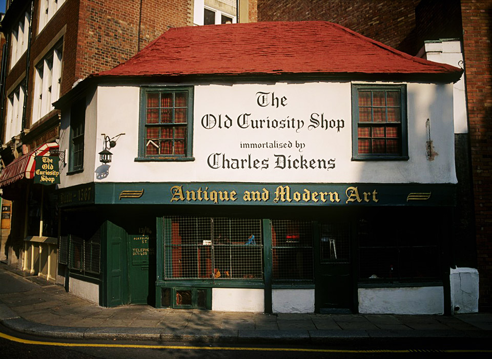
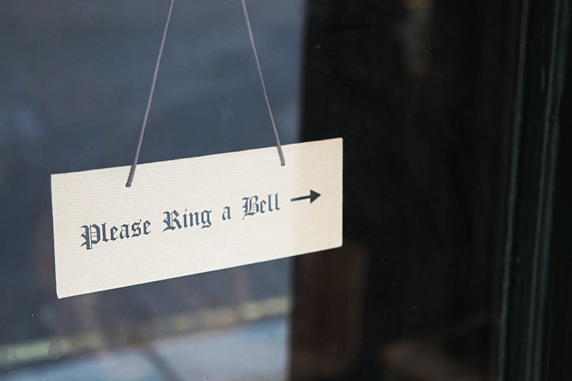
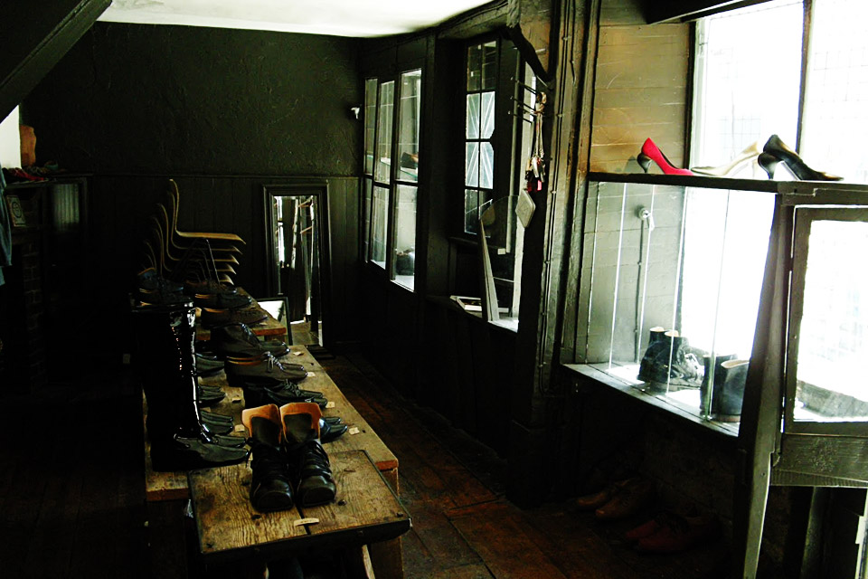
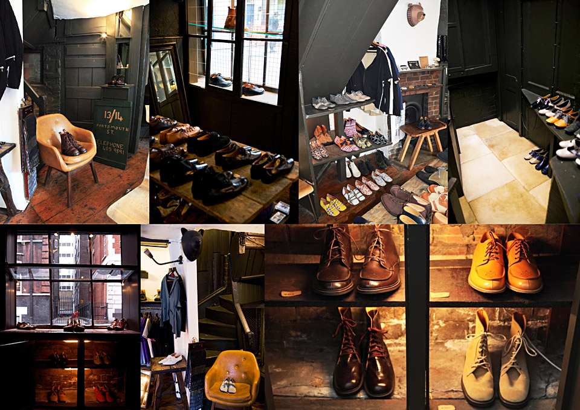

British Reminiscence on a Japanese
Based in London at the iconic "The Old Curiosity Shop" building famously known as the inspiration behind Charles Dickens' novel of the same name.?This beautifully constructed space that functions as a store, work shop and office bears similar qualities to that of Daita's hand crafted shoes and accessories. A truly unique collection of shoes that couldn't be more well suited to its surroundings.

Established in 1992 by shoe designer Daita Kimura, The Old Curiosity Shop has built a reputation that spans over two decades. The Old Curiosity Shop has become an international company with presence in some of the world's most prestigious concept stores. Working predominantly in leather, each shoe is individually designed and exquisitely hand crafted with an uncompromising level of quality. Known for its iconic square toe shape shoe, the brand's classic shapes are manipulated to create a contemporary twist.
With a long list of collaborations and commissions with the designers like Alexander McQueen, Yohji Yamamoto and Comme des Garcon, The Old Curiousity Shop continues to push the boundaries of shoe design, creating trends that are quickly adopted by other brands.


